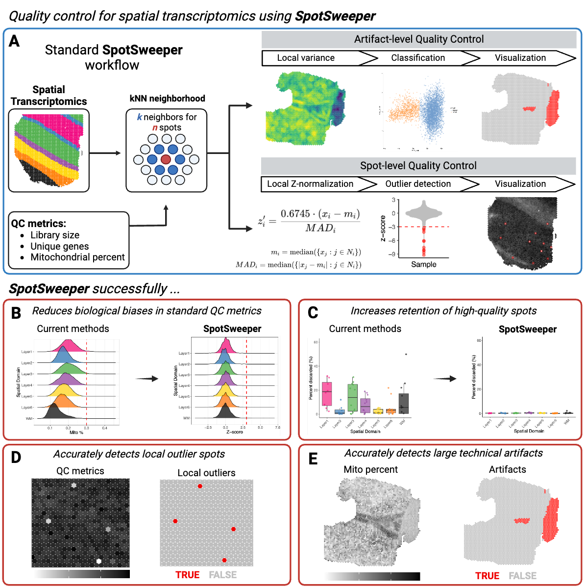

SpotSweeper is a package developed for spatially-aware quality control (QC) methods for the detection, visualization, and removal of both local outliers and large artifacts in spot-based spatial transcriptomics data, such as 10x Genomics Visium, using standard QC metrics.
The package is currently under development and is not yet available on Bioconductor. The package is currently in the experimental stage of development. If you experience an issues user the package, please open an issue on the GitHub repository.
To find more information, please visit the documentation website.

Installation instructions
You can install the latest version of SpotSweeper from Bioconductor with the following code:
if (!requireNamespace("BiocManager", quietly = TRUE)) {
install.packages("BiocManager")
}
BiocManager::install("SpotSweeper")The latest development version can be installed from GitHub using the following:
if (!require("devtools")) install.packages("devtools")
remotes::install_github("MicTott/SpotSweeper")Input data format
In the examples below, we assume the input data are provided as a SpatialExperiment (SPE) object. The outputs for spot-level outliers and artifacts are stored in the colData of the SPE object.
Tutorials
A detailed tutorial is available in the package vignette from Bioconductor. A direct link to the tutorial / package vignette is available here.
Development tools
- Continuous code testing is possible thanks to GitHub actions through
BiocStyle::Biocpkg('biocthis'). - The documentation website is automatically updated thanks to
BiocStyle::CRANpkg('pkgdown'). - The code is styled automatically thanks to
BiocStyle::CRANpkg('styler'). - The documentation is formatted thanks to
BiocStyle::CRANpkg('devtools')andBiocStyle::CRANpkg('roxygen2').
This package was developed using BiocStyle::Biocpkg('biocthis').